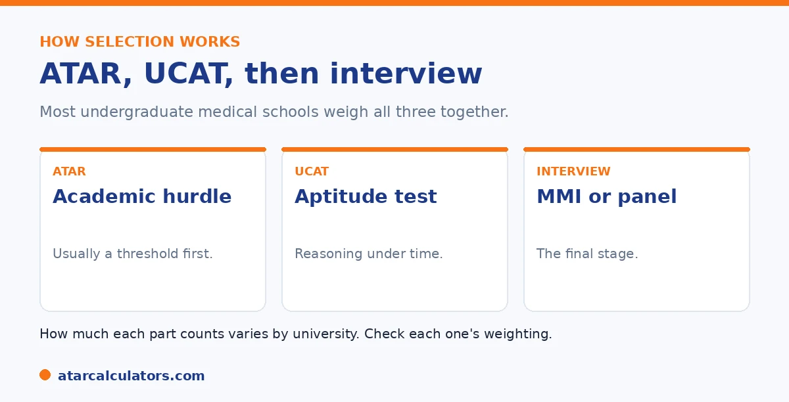

Here is the short version. Most undergraduate medical schools use three things together: your ATAR, your UCAT score, and an interview. The ATAR is often a hurdle you must clear to be considered. The UCAT, an aptitude test sat in Year 12, helps rank applicants. Shortlisted students are then interviewed. How much each part counts varies by university, so neither the ATAR nor the UCAT is universally more important.
Students often ask whether the UCAT or the ATAR matters more for medicine. The answer is that both matter, and how they combine depends on the university.
Below is how the two work together. To explore your options, use our medicine ATAR calculator.
Key takeaways
- Medicine uses your ATAR, your UCAT, and an interview.
- The ATAR is often a hurdle to be considered.
- The UCAT is an aptitude test sat in Year 12.
- Shortlisted students are then interviewed.
- How much each part counts varies by university.
- Neither is universally more important than the other.
Three parts, weighed together
Most undergraduate medical schools select on three things: your ATAR, your UCAT score, and an interview. They are not separate hoops; they are combined to rank and select applicants.

So a strong result in one area can help, but you cannot ignore the others. A brilliant ATAR with a weak UCAT, or the reverse, can still miss out.
The role of the ATAR
The ATAR is usually the academic gate. Many universities set an ATAR threshold you must clear to be considered for interview. At some, the ATAR also feeds into the final ranking, alongside the UCAT.
So a high ATAR is necessary. But at many universities, clearing the threshold is what matters most, after which the UCAT and interview take over. For the cut-offs, see our medicine ATAR guide.
The role of the UCAT
The UCAT is an aptitude test, sat in Year 12, that measures reasoning rather than curriculum knowledge. It is used to rank applicants, often heavily, once the ATAR hurdle is cleared.
There is no fixed UCAT score you need, because it works as a ranking against other applicants each year. A strong UCAT can make you very competitive, so it is worth serious preparation.
Because it is a ranking, the UCAT rewards preparation more than students expect. It is not a knowledge test you can cram the night before. It measures how quickly and accurately you reason under time pressure, across sections such as verbal reasoning, decision making, quantitative reasoning, and situational judgement. Those are skills, and skills improve with practice. So a student who works through timed practice over weeks typically ranks well above one who walks in cold with the same natural ability. The most common error is treating it as an afterthought behind the ATAR. At many medical schools the UCAT carries as much weight as your ATAR once you have cleared the threshold. So neglecting it can cost you the place even with a near-perfect ATAR. The practical takeaway is to give the UCAT real, scheduled preparation time through the first half of Year 12. Learn the question types and the on-screen tools early. Then build up to full timed sections, so the pace of the real test feels familiar. For how to fit that around your exams, see our medicine strategy guide.
Want to see your medicine options?
Try the medicine ATAR calculator →The interview
The final stage is the interview, usually a multiple mini interview, or MMI, or a panel. Shortlisted applicants, chosen on ATAR and UCAT, are invited. The interview tests communication, ethical reasoning, and suitability for medicine.
It can carry significant weight in the final decision, so it is not a formality. Practising for the MMI format, including ethical scenarios, makes a real difference.
The weighting varies by university
The most important thing to know is that the weighting differs by university. Some lean more on the UCAT, some more on the interview, some keep the ATAR in the final ranking. There is no single formula.
So the answer to whether the UCAT or ATAR matters more is: it depends on the university. Check each one's selection model, and prepare for all three. See our medicine strategy guide.
Can a strong UCAT offset a lower ATAR?
At some universities, yes, partly. Because your ATAR, UCAT and interview are combined, a strong UCAT can lift an application whose ATAR is slightly below the usual mark. But the degree of offset varies widely between universities.
At universities that weight the UCAT heavily, a standout UCAT can meaningfully improve your position. At those that weight the ATAR more, the offset is smaller. So there is no universal rule; it depends on each university’s formula.
The safe interpretation is that a strong UCAT helps, but it is not a substitute for a competitive ATAR. Aim to be strong in both, rather than relying on one to rescue the other.
What UCAT score is competitive?
A competitive UCAT score depends on the university and the year, because selection is relative to the whole applicant pool. Broadly, the higher your percentile ranking, the stronger your position, and top programs draw applicants with high percentile scores.
Rather than a fixed number, think in terms of ranking well against other applicants. The UCAT is scored so that your standing relative to everyone else is what counts, and that standing shifts each year with the cohort.
So aim to prepare thoroughly and score as high as you can, rather than targeting a single figure. Check each university for how it uses UCAT results, since some set thresholds and others rank.
Preparing for the UCAT
The UCAT rewards preparation, because it tests specific reasoning skills under tight time limits. Familiarity with the question types and timing makes a real difference, so practice is worthwhile in the months before you sit it.
Work on pacing as much as accuracy. Many students know how to answer the questions but run out of time, so timed practice that builds speed is often where the marks are found.
Start early enough to practise steadily rather than cram. The UCAT sits alongside your Year 12 studies, so a manageable, consistent preparation plan protects both your UCAT score and your ATAR.
When you sit the UCAT
You sit the UCAT in Year 12, typically in the middle of the year, before final exams. This means preparing for it while your school studies continue, which is part of why planning your time matters.
Because it falls mid-year, the UCAT does not clash directly with final exams, but it does compete for your time during a busy period. Building it into your Year 12 plan early keeps it from derailing your other work.
What the UCAT tests
The UCAT assesses reasoning rather than curriculum content: areas like verbal reasoning, decision making, quantitative reasoning, and situational judgement. It is designed to measure aptitudes relevant to studying medicine, not what you have memorised.
Because it is skills-based, no subject directly “covers” the UCAT. Preparation is about practising the specific question types and building speed, rather than revising school content. That makes it a distinct task from your ATAR subjects.
A realistic approach
The realistic approach is to treat the ATAR and UCAT as two pillars of the same goal, and prepare for both. Neglecting either weakens your application, since universities combine them, often with an interview on top.
Plan your Year 12 so that UCAT preparation has a place without eating into your ATAR study. A strong result in both, plus interview preparation if you progress, is what a competitive medicine application looks like.
Can you resit the UCAT?
You sit the UCAT once in a given year, so there is no second attempt within the same admissions cycle. If you reapply for medicine in a later year, you sit the UCAT again for that cycle.
This makes your one sitting important, which is why steady preparation matters. It also means students who reapply after a first-round miss get a fresh UCAT attempt, and often improve on it with more preparation.
Balancing UCAT and ATAR study
The challenge in Year 12 is balancing UCAT preparation with the study that drives your ATAR. Both matter, and neglecting either weakens your application, so the two need to share your time without one swamping the other.
A practical approach is to give the UCAT focused, regular blocks in the months before you sit it, then return your full attention to your ATAR for finals. Treating them as sequenced priorities, rather than competing ones, helps.
Common UCAT mistakes
Common mistakes include starting preparation too late, practising for accuracy but not speed, and neglecting the situational judgement component because it feels less academic. Each can quietly cost you marks.
Avoiding them is straightforward: begin early, practise under timed conditions, and give every section attention. The UCAT is beatable with the right preparation, so the biggest error is treating it as an afterthought to your ATAR.
Common questions
How do the UCAT and ATAR combine for medicine?
Most undergraduate medical schools use both, plus an interview. The ATAR is often a hurdle to be considered, the UCAT helps rank applicants, and shortlisted students are interviewed. How much each part counts varies by university.
What UCAT score do you need?
There is no fixed score, because the UCAT works as a ranking against other applicants each year. A strong score makes you more competitive, especially once you have cleared the ATAR threshold. Aim as high as you can.
Is the UCAT or ATAR more important?
Neither universally. It depends on the university's selection model. Some lean more on the UCAT, some on the interview, and some keep the ATAR in the final ranking. Prepare for all three rather than betting on one.
Does a high ATAR make up for a low UCAT?
Not always. At many universities the ATAR is a hurdle, after which the UCAT and interview take over. So a weak UCAT can still hold you back. The combination matters, and the weighting varies by university.
When do you sit the UCAT?
The UCAT is sat in Year 12, in the months before you apply, with results used in that year's admissions cycle. Plan your preparation around the test date, alongside your school studies.
Explore your medicine options
See realistic pathways into medicine based on your ATAR. Free, and no signup.
Open the medicine ATAR calculator →Related guides
This guide is general information for students and parents, not formal admissions advice. ATAR cut-offs, UCAT and GAMSAT requirements, interview formats and pathways vary by university and change every year. For graduate entry, applications run through GEMSAS, and the UCAT and GAMSAT are run by their own bodies. Any figures here are approximate and based on recent years. So always confirm the current details with each university and your state admissions centre (such as UAC, VTAC, QTAC, SATAC or TISC). Reviewed by the ATARCalculators Editorial Team.